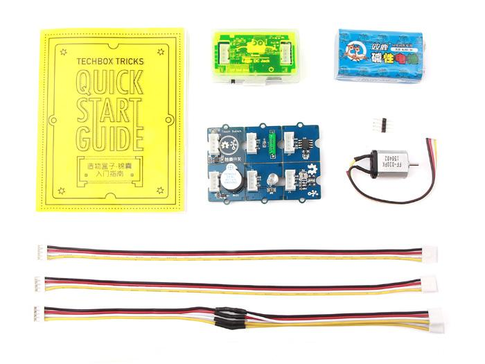
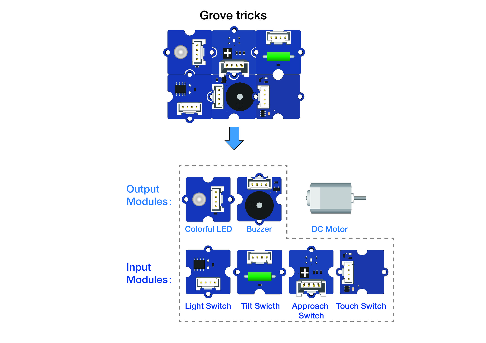
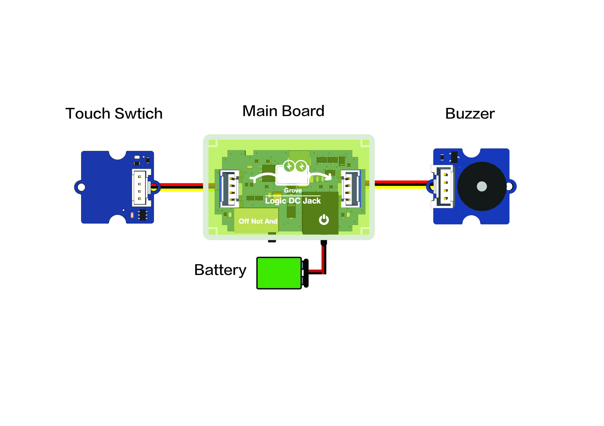
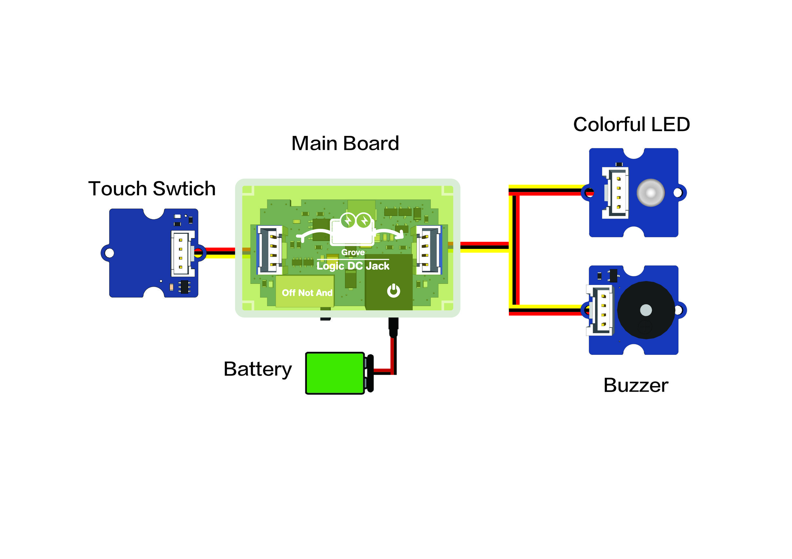
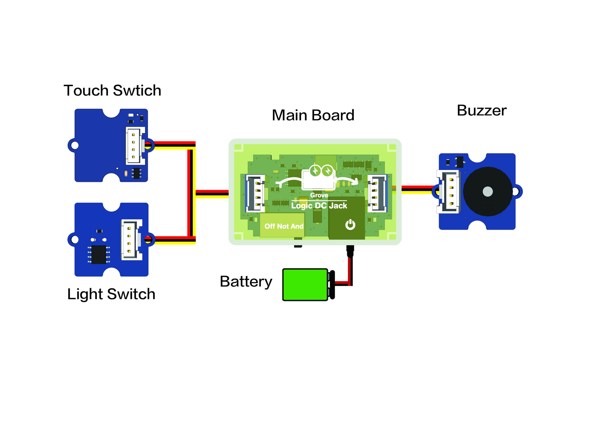
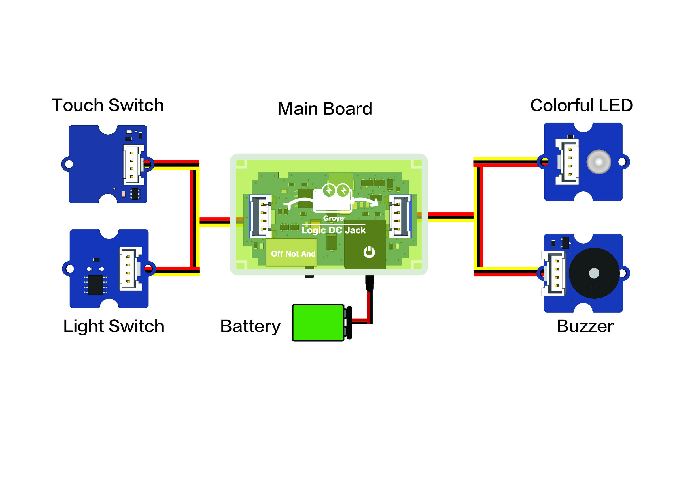

Techbox Tricks
TechBox is a series of electronics modular kits for DIY enthusiasts, electronic beginners and educators.
With the plug and make feature, the entry level TechBox Tricks sets you to a good start on a journey of creation without any requirement of programming knowledge.
Features
- Tiny, powerful, plug-and-make
- 84 different combinations to play with
- Step-by-step tutorials provide learning and making experience and are full of fun
- Full support and resources from the Grove family
Part list

- Logic DC Jack (Main board) *1
- Grove tricks *1
- Light Switch
- Tilt Switch
- Approach switch
- Touch switch
- Colorful LED
- Buzzer
- DC motor *1
- Grove cables *2
- Grove branch cable *1
- Battery cable *1
- 9V battery *1
Usage
Step 1: Preparations
Get 4 input modules and 2 output ones with Grove tricks.

Step 2: Basic principles
There are two sockets of the Mainboard（Logic DC Jack）. Have one input module on the left and one output module on the right. Now Just switch on to start creations!
Notes:
- To insert the groove of Grove cables directly towards the groove of the socket.
- The socket on the left is for inputs and the one on the right is for output.
- Switch to “Off”means power off. Switch to “Not” means the main board now is a NOT logic gates. Switch to “And” means power on,and also the main board will be a AND logic gates only if inserting a grove branch cable into the left socket.
Step 3: Try it now
Project 1

Only if the switch is on "AND" and the Touch Switch is pressed, the Buzzer will sound.
Project 2

Only if the switch is on "AND" and the Touch Switch is pressed, the Buzzer will sound and the led will light up.
Project 3

Only if the switch is on "AND" and the Touch Switch is pressed and the Light Switch is well lit at the same time, the Buzzer will sound.
Project 4

Only if the switch is on "AND" and the Touch Switch is pressed and the Light Switch is well lit at the same time, the output modules start up.
Other Examples
Feel free to add your project to the list!
Resources
Copyright (c) 2008-2016 Seeed Development Limited (
www.seeedstudio.com /
www.seeed.cc)
This static html page was created from http://www.seeedstudio.com/wiki